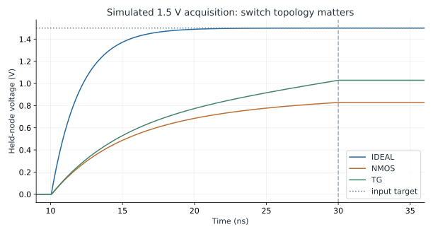
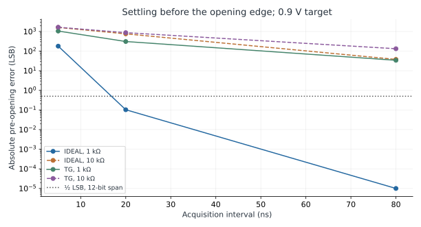
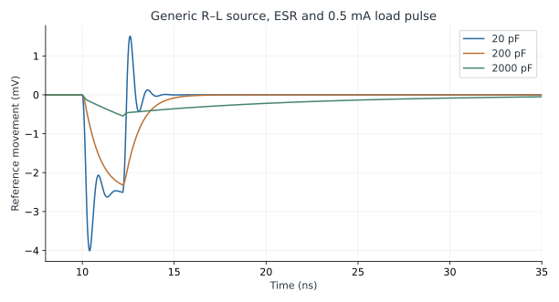

Lab 3 · Sampling Switches & Reference Loading
Discover where an ideal acquisition-time estimate stops explaining the held sample.
- Predict acquisition time from a stated accuracy target.
- Compare ideal and SKY130 MOS switches across signal range and source resistance.
- Separate pre-opening error, post-edge error, and hold drift.
- Connect sampling to the reference and package networks that replenish charge.
Execution status: 57 acquisition cases and three reference-load cases executed with ngspice 44.2. Acquisition uses pinned SKY130 transistor models. The reference bench is an assumed lumped RLC network. Neither is a completed ADC design.
- Runner: run.py
- Instructions and measurement definitions
- Recorded switch measurements (CSV)
- Recorded reference measurements (CSV)
- Tool, model, and limitation record
Read the shared setup guide before running. Recorded results are included so you can study the lab without installing tools.
1. A sample is a charge-transfer event
A digital block requests a conversion with an enable bit. The analog front end must move charge through finite impedance, approach the new input, open a switch, and preserve the value during conversion. These actions consume time and disturb both signal and reference. This lab turns the acquisition formula in lesson 79 into inspectable circuit experiments.
The capacitor is 2 pF and the nominal span is 1.8 V. Both are design assumptions. Switches use public 1.8 V NMOS and HVT PMOS models with widths 0.65 µm and 1.00 µm, length 0.15 µm, and bodies tied to the rails. This small switch deliberately drives a substantial capacitance. The circuit is an experiment, not a recommended 12-bit SKY130 front end.
2. Predict the ideal answer first
A linear resistance R charging C leaves an error ΔV·exp(−t/RC). To settle a full-scale step below half an ideal N-bit LSB requires t > (N+1) ln(2) RC. For N=12 the multiplier is 9.0109. This is a deterministic settling allocation, not a complete noise or converter accuracy specification.
At 1.8 V span, one LSB is 439.453 µV and half an LSB is 219.727 µV. With a 1 kΩ source and the ideal switch's 5 Ω on-resistance, τ=1005 Ω×2 pF=2.010 ns. A full-scale step needs about 18.112 ns in the one-pole model. A 10 kΩ source increases that to about 180.31 ns. A larger acquisition window can therefore fix a source-impedance problem that a faster conversion request would worsen.
The 100 ps clock edges and measurement instant slightly change the effective tracking interval. For a 0.9 V initial error, use ln(0.9 V/219.727 µV) rather than the full-scale factor. An accurate estimate uses the actual starting error and every relevant resistance, including the switch.
| Sweep or control | Values | What it isolates |
|---|---|---|
| Topology | Ideal 5 Ω switch; NMOS; transmission gate | Finite and signal-dependent conduction |
| Source resistance | 1 kΩ, 10 kΩ | Driver contribution to settling |
| Input target | 0.1, 0.9, 1.5 V | Signal-range dependence |
| Acquisition | 5, 20, 80 ns | Time available before opening |
| Added sizing cases | Transmission gate m=8; 20, 80, 200 ns; 0.9 V and 1 kΩ | Improved conduction versus persistent edge-related error |
| Model condition | TT, 25 °C, 1.8 V | One deterministic condition, not corner or statistical qualification |
3. Run and inspect the measurements
python labs/L03_sampling_interface/run.py
python labs/L03_sampling_interface/run.py --ngspice /path/to/ngspice
python labs/L03_sampling_interface/run.py --output labs/L03_sampling_interface/my_runThe default writes run_results/; results/ retains the recorded run. The capacitor starts at zero through an explicit initial condition and transient uic. Vin reaches its target at 9.1 ns. Tracking begins with a clock rise from 10.0 to 10.1 ns. With 20 ns acquisition, opening begins at 30.0 ns and ends at 30.1 ns. The maximum timestep is 20 ps.
Vhold is measured 50 ps before opening starts, 1 ns after opening starts, and 7 ns after it starts. The net movement across the edge includes the final part of acquisition and the model's charge redistribution. It does not isolate one mechanism called “charge injection.” A dedicated decomposition would hold other effects constant and investigate channel charge, overlap coupling, source motion, and clock timing separately.
| Measurement | Definition | Interpretation |
|---|---|---|
| Pre-opening error | Vin − Vhold at tOFF−50 ps | Was acquisition sufficiently complete? |
| Post-edge error | Vin − Vhold at tOFF+1 ns | What sample was actually left? |
| Edge shift | Vhold(tOFF+1 ns) − Vhold(tOFF−50 ps) | Observed movement, not an isolated injection measurement |
| Hold change | Vhold(tOFF+7 ns) − Vhold(tOFF+1 ns) | Six-nanosecond deterministic hold interval; no transient noise |
4. See why the ideal switch is optimistic

| Switch | Vhold before opening (V) | Pre-opening error (mV) | Post-edge error (mV) |
|---|---|---|---|
| IDEAL | 1.499925 | 0.075 | 0.072 |
| NMOS | 0.827934 | 672.066 | 671.810 |
| TG | 1.027558 | 472.442 | 471.048 |
At a high input, an NMOS gate driven only to 1.8 V loses gate overdrive as the channel potential rises. Body effect changes its threshold behavior too. “Passes a weak high” is useful intuition, but VDD−VT is not an exact finite-time clamp. Subthreshold conduction and the full device equations remain relevant. A transmission gate adds a PMOS path that supports the high end better, but retains nonlinear on-resistance. The chosen HVT PMOS is not a generic ideal switch.
The ideal switch misses the target by only 0.0752 mV before opening, while this small transmission gate misses by 472.4 mV. That large difference is an intentional diagnostic. It shows why using source resistance alone in the time constant is inadequate. This is not quantization error: there is no quantizer in the transistor bench.

5. Fix acquisition, then find the next error
The added cases use m=8 on each transistor at the same supported dimensions. This represents eight parallel copies; it does not assert that an arbitrary wider layout has identical diffusion, matching, or parasitics. At 80 ns, acquisition is excellent. The post-edge sample is still displaced. Waiting 120 ns longer before opening barely changes that displacement.
| m=8; 0.9 V target | Pre-opening error (µV) | Post-edge error (µV) | Edge shift (µV) |
|---|---|---|---|
| 20 ns | 8014.586 | 8556.377 | -541.791 |
| 80 ns | 0.741 | 590.575 | -589.834 |
| 200 ns | 0.003 | 589.841 | -589.838 |
At 80 ns the pre-opening error is 0.741 µV, well below the 219.727 µV allocation, but the post-edge error is about 590.6 µV. A ready test observing only the tracking interval would incorrectly approve the sample. Larger devices improve conduction but bring additional capacitance and switching charge. Practical remedies may involve complementary sizing, bottom-plate timing, differential cancellation, or a different topology. Each remedy requires its own electrical test.
Reduce the maximum timestep and compare the post-edge result to test numerical resolution. Then vary clock edge time to test a different circuit stimulus. These changes answer different questions. Add the actual clock driver and extracted capacitances before evaluating a practical switch design.
6. Noise and hold behavior need separate budgets
At 25 °C, sqrt(kT/C) for 2 pF is about 45.37 µV RMS, or 0.103 ideal 12-bit LSB. This is the equilibrium sampled thermal-noise scale of a simple resistor/capacitor system. It does not include every switched-circuit noise mechanism and is not a deterministic maximum. These transient traces have no transient noise enabled. A smooth trace is consequently no evidence of a noise-free sample.
The six-nanosecond hold changes are small because the explicit 1 TΩ path and modeled leakage are weak over that interval. They do not establish a microsecond hold specification, behavior at another temperature, or performance with a real comparator connected. Extend the observation and include the actual load. Increasing C lowers kT/C but also increases acquisition charge, driver demand, area, and often reference disturbance.
7. The reference must recover too
The final experiment uses an ideal 1.8 V source behind 5 Ω and 1 nH, with a local capacitor having 0.2 Ω ESR. A 0.5 mA load pulse has a 2 ns flat top and 0.2 ns edges. These are assumed teaching parameters, not published SKY130 package or converter specifications. The question is how far the local reference moves when a switched load takes charge.

| Local capacitor | Peak absolute movement | Recovery to ±50 µV after pulse ends |
|---|---|---|
| 20 pF | 4.0065 mV | 1.3525 ns |
| 200 pF | 2.3191 mV | 2.9625 ns |
| 2000 pF | 0.5455 mV | 22.6725 ns |
Recovery is measured from 12.4 ns, after the falling edge, to the final entry into the ±50 µV band over the remaining 80 ns simulation. It is not the first crossing. The larger capacitor reduces the peak but takes longer to return within this narrow tolerance. Decoupling requires a frequency range, an impedance model, and a recovery requirement.
The pulse's flat portion removes Q=IΔt=1 pC; its two triangular edges add 0.1 pC. A crude Q/C estimate omits source replenishment, ESR, and inductance, all included here. The ±50 µV band is an assumed local-reference requirement. A reference shift causes input-dependent gain error in an ideal ratio converter and cannot be indiscriminately added to an input-referred RMS noise number.
8. Define a useful extension experiment
Choose one requirement before editing the bench: for example, post-edge error below half an LSB for 0.1–1.5 V input with a 1 kΩ source. Sweep both signal level and acquisition interval, and report the worst measured error with its condition. A single midscale trace cannot establish that input-range requirement.
Next add a disturbance from another domain: a small reference pulse, clock skew between the two switch gates, or a delayed source step. The important observation is which measurement fails first. A successful digital handshake does not prove acquisition, and a settled input does not prove the reference is quiet. Preserve the original deck and compare one change at a time so the explanation remains traceable.
9. Extend the experiment to a system requirement
The acquisition parameter is measured from the start of the closing clock ramp to the start of the opening ramp. It is not exactly that many nanoseconds of a fully-on switch: conduction begins during the 100 ps ramp, and the pre-opening sample is taken 50 ps before opening. Preserve these definitions when comparing the analytical RC estimate and the numerical data. Changing edge time also changes the effective tracking interval.
For a hold-time exercise, assume a constant 100 pA leakage current into or out of the 2 pF capacitor. In one microsecond it moves the node by IΔt/C=50 µV. In ten microseconds it moves by 500 µV, more than one ideal 12-bit LSB at a 1.8 V span. The assumed current is not a SKY130 leakage specification. Its purpose is to show why a six-nanosecond hold test cannot establish a long conversion or idle interval.
For a timing exercise, consider a sine with 0.8 V peak at 100 kHz. Its maximum slope is 2πfA≈502,655 V/s. A 10 ps sampling-time uncertainty gives approximately 5.03 µV of local voltage uncertainty at the steepest point. That is a slope-based estimate, distinct from the deterministic switch-edge displacement and the RMS kT/C estimate. Specify whether timing uncertainty is an RMS random quantity or a bounded error before combining it with another budget.
For a process exercise, repeat a selected passing and failing case at the other bundled corners and supported temperatures. Check that every transistor terminal remains within the applicable device conditions. The bundled mismatch switches are disabled; changing a corner name does not create a mismatch Monte Carlo experiment. A yield claim requires an appropriate statistical model, sampling plan, and uncertainty estimate.
A short final report should identify the worst pre-opening and post-edge errors separately, retain the associated input level and source impedance, and state whether the hold and reference requirements also passed. Attach the original deck and modified deck, explain the one intended change, and include both the numerical summary and a trace around the opening edge. That makes the result useful to the digital designer setting wait counts as well as to the analog designer selecting topology and size.
Checkpoint: can a longer tracking interval remove the m=8 post-edge error?
The 80 ns and 200 ns records have almost identical post-edge error even though acquisition improves. That remedy is exhausted for this bench. Investigate the switching event and topology.
Checkpoint: is the capacitor with the smallest ripple automatically best?
No. The 2000 pF case has the lowest peak and the longest recovery to the chosen band. Area, stability, driver current, ESR/ESL, and repetition rate also matter.
Key takeaways
- Include both source impedance and signal-dependent switch impedance.
- Measure before and after opening.
- Deterministic transient traces do not establish noise distributions.
- Reference and package loading are part of the conversion problem.
Sources and scope
Checked 6 November 2026. Diagrams and worked examples are original. Assumed values describe teaching models; recorded simulations retain their decks, data, and tool versions.
- Pinned SKY130 primitive models — transistor behavior in the acquisition runs.
- ngspice version 44 manual — switch elements, initial conditions and transient controls.
- Analog Devices MT-090: Sample-and-hold amplifiers — practical acquisition and hold mechanisms.
- Analog Devices AN-82: Voltage references — load response, noise, drift and reference specifications.
- SKY130 analog documentation — context for process-model use.
All 84 lessons
- Part I · Foundations: the physical chip and its vocabulary
- 1. What Is a Chip? Board, Package & Die
- 2. The Silicon Wafer: From Crystal to Dies
- 3. How a Die Is Built: SKY130 Layers & Lithography
- 4. The MOSFET: SKY130’s Transistor
- 5. Anatomy of a Die: Core, Pad Ring & Seal Ring
- 6. Packages: Wire Bonds, Flip-Chip, QFN & WLCSP
- 7. The PCB and the Path to the Transistor
- 8. The Design Flow and Its Files: RTL to GDS
- 9. Signals Primer: DC, AC, RMS, Decibels & the FFT
- Part II · Transistors to logic gates
- 10. Logic Gates at the Transistor Level
- 11. Drive Strength & Transistor Sizing
- 12. More Gate Topologies
- Part III · Standard-cell layout
- 13. Site Rows & Standard Cell Placement
- 14. The Power Grid & Routing Grids
- 15. Metal Layers, Vias & the Stackup
- 16. Inside a Standard Cell's Layout
- 17. The Cell Template: Tracks, Sites & Edges
- 18. Anatomy of a Bigger Cell
- 19. Pin Access & Porosity
- 20. A Flip-Flop From the Inside
- Part IV · Loads, timing and interconnect
- 21. Loads
- 22. Liberty Files: What a Cell Library Records
- 23. Reading Liberty Timing Tables
- 24. Standard-Cell Characterization: How Liberty Is Made
- 25. Timing
- 26. Setup and Hold
- 27. Latch-Based Design & Time Borrowing
- 28. Routing Resistance and Parasitics
- 29. Delay from Physics: Transistor, Contact, Via, Wire & Gate
- 30. Electromigration
- 31. Reliability & Aging: HCI, BTI, TDDB & Self-Heating
- 32. DFM, Variation & Yield: A Digital View
- Part V · Digital implementation
- 33. RTL Patterns: FSMs, Handshakes, Resets & Lint
- 34. RTL, Synthesis & Timing Constraints
- 35. The Clock Tree
- 36. Clock Generation: Oscillators, DCO, PLL & Jitter
- 37. Clock Gating & Power States
- 38. Power Analysis & Low-Power Cells
- 39. Clock-Domain Crossings & Reset
- 40. Scan
- 41. DFT Beyond Scan: Faults, ATPG, BIST and JTAG
- 42. A Timed Logic Path: Registers, Clocks, Scan & Speed/Power
- 43. Memories: SRAM, OpenRAM and DFFRAM
- 44. Datapath & Arithmetic
- 45. Multi-Corner STA: OCV, CRPR & Hold Cells
- 46. Functional Verification: Testbenches, Assertions, Formal & Gate-Level Sim
- Part VI · Physical cells and the floorplan
- 47. Fill Cells
- 48. Well Taps and Latch-up
- 49. Endcaps
- 50. Tie Cells
- 51. Antenna Diodes
- 52. Decap Cells
- 53. Spare Cells and ECO
- 54. Level Shifters
- 55. Floorplan
- 56. Caravel Integration: The User Project Wrapper
- 57. Hierarchical Design, Abstracts & ECO
- 58. Placement: Global, Legalization & Detailed
- 59. Routing & Timing Closure
- 60. Digital Signal Integrity: Crosstalk Delay & Glitch
- 61. Metal Fill and Cell Fill
- 62. Physical Verification Signoff
- 63. Power-Integrity Signoff: Static IR, Dynamic IR & EM
- Part VII · The chip boundary: I/O, ESD and package
- 64. The I/O Ring
- 65. ESD and Clamps
- 66. I/O Fill
- 67. RDL Routing
- 68. I/O Power and IR Drop
- 69. Power, Package & Thermal Coupling
- 70. Tapeout, MPW & Tiny Tapeout
- 71. Post-Silicon Bring-Up, Test & Characterization
- Part VIII · Analog circuits
- 72. Analog Bias, gm & Headroom
- 73. Feedback, Loading & Stability
- 74. Differential Pairs, Common Mode & CMFB
- 75. Noise, Mismatch & Variation
- 76. References, Temperature & Startup
- 77. Comparators & Power Management: StrongARM, LDO & POR
- 78. Matching, Layout & Extracted Netlists
- Part IX · Mixed-signal: sampling, conversion and verification
- 79. Sampling, Aliasing & Settling
- 80. ADC & DAC Interfaces
- 81. FFT, Noise & Distortion Measurements
- 82. Calibration, Trimming & Testability
- 83. Crosstalk, Return Paths & Isolation
- 84. Mixed-Signal Verification & Bring-Up
Updated 11 November 2026 · 84 lessons · Offline lessons, diagrams, source code and recorded results · External references require internet access.